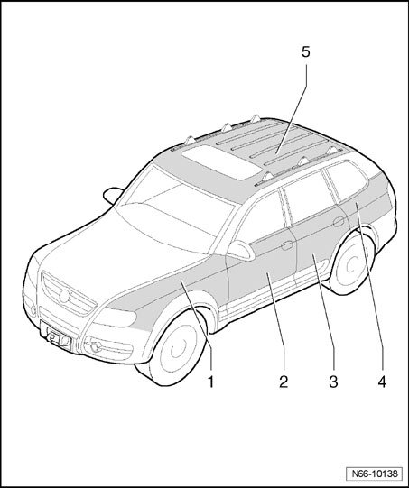

Protective And Decorative Foils
Protective And Decorative Foils
NOTE:
- The illustration shows the left side. The right side is similar and can be determined from this.
- Protective and decorative foils can only be ordered via Parts Dept.
- Further information on the foils can be obtained via Volkswagen Technical Helpline.

1 - Protective foil - fender
- Transparent
2 - Protective foil - front door
- Transparent
3 - Protective foil - rear door
- Transparent
4 - Protective foil - side panel
- Transparent
5 - Decorative foil - roof
- Reflex silver metallic